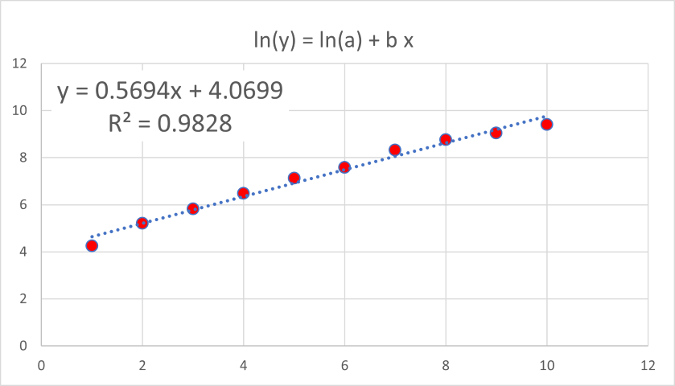
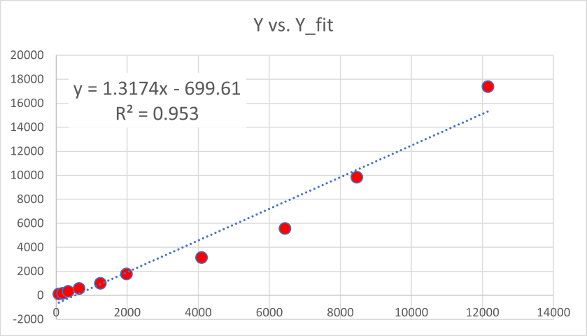

エクセルでの近似 - R二乗値の求め方 - 指数関数の場合-01
エクセルでの近似について考えます．
今回は指数関数．
\( \Large \displaystyle y=a \ e^{bx} \)
ご存じの通り，指数関数近似では，
両辺を対数変換する
対数にした左辺（ln(y))とｘとで直線近似を行う
というのが一般的です，エクセルでも同様の方法をとっています．
\( \Large \begin{eqnarray} \displaystyle ln(y) &=&ln(a \ e^{bx}) \\
&=& ln(a) + b \ x
\\
\end{eqnarray} \)
ln(y)とｘとの間には直線関係がありますので，直線近似が可能となります．
実際に確認してみましょう．
| X | Y |
| 1 | 70 |
| 2 | 183 |
| 3 | 340 |
| 4 | 649 |
| 5 | 1243 |
| 6 | 1979 |
| 7 | 4096 |
| 8 | 6440 |
| 9 | 8459 |
| 10 | 12154 |
（どこかのサイトの数字を拾ってきたのですが．．．すいません，忘れました，わかったらリンクします）
このデータをエクセルで指数近似すると，
となり，近似してくれます（近似があまりうまくいっていないのは後程，ここ，で）
対数をとって，表示させ，直線近似を行うと，

と結構きれいな直線に乗り，近似もうまくいっています．ここから，
\( \Large \displaystyle a = e^{4.0699} = 58.883 \)
\( \Large \displaystyle b =0.5694 \)
が指数の近似解となるわけです．
しかし．．．指数近似した際の，R2，の値，0.953，はどこから来た値でしょう？
相関係数は，
\( \Large Cov = \frac{\displaystyle \sum_{i=1}^n (x_i - \overline{x})(y_i - \overline{y}) }{\sqrt{\displaystyle \sum_{i=1}^n (x_i - \overline{x} )^2} \sqrt{\displaystyle \sum_{i=1}^n (y_i - \overline{y} )^2} } = 0.9158 \)
\( \Large Cov^2 = \color{blue}{ 0.8386} \)
決定係数，R12，は，
\( \Large R_1^2 = 1 - \frac{\displaystyle \sum_{i=1}^n (y_i - \overline{y})^2 }{\displaystyle \sum_{i=1}^n (y_i - \overline{y} )^2} = \color{blue}{0.8018} \)
決定係数，R72，は，
\( \Large R_7^2 = 1 - \frac{\displaystyle \sum_{i=1}^n (y_i - \overline{y})^2 }{\displaystyle \sum_{i=1}^n y_i -^2} = \color{blue}{0.8904} \)
対数での直線近似での決定係数，
\( \Large R_7^2 = \color{blue}{0.9828} \)
どれも合いません．．．
いろいろ探してみましたが，エクセルでの指数関数近似の決定係数に関する記述が見つかりません．
ただ！英語で検索したところ，ヒットしました．
Exponential trend equation and forecast
つまり．．．
\( \Large \color{red}{y_i} \)の値と近似した際の近似値，\( \Large \color{red}{\hat{y_i}} \)とのグラフの相関係数の二乗 or 決定係数，R12，がエクセルでの指数関数近似の決定係数
となるとのことです，実際にグラフにしてみて近似直線を描いてみると，

と，
\( \Large R^2 = \color{red}{0.953} \)
と，指数近似した際の，R2，の値，0.953，と一致します．
確かに，
実際の値，\( \Large \color{red}{y_i} \)と近似して推定した値，\( \Large \color{red}{\hat{y_i}} \)との関係性，相関を見る
というのは理にかなっていそうですね（きちんとした数学的根拠は私にはわかりませんが．．．）